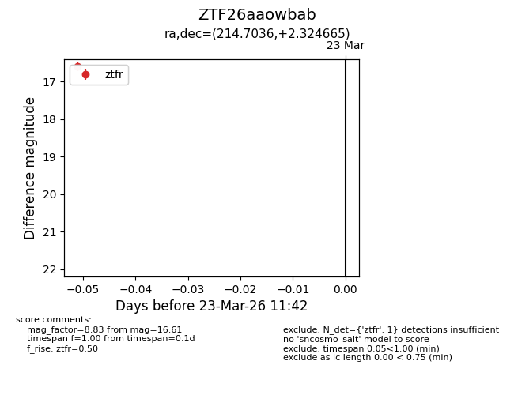
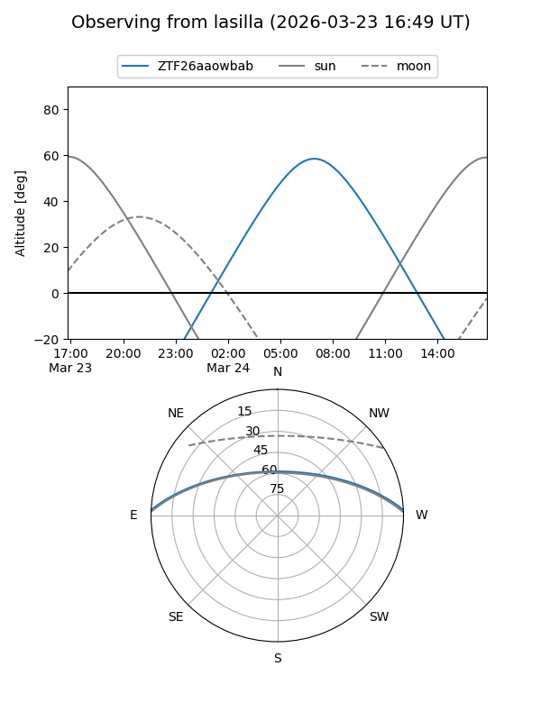
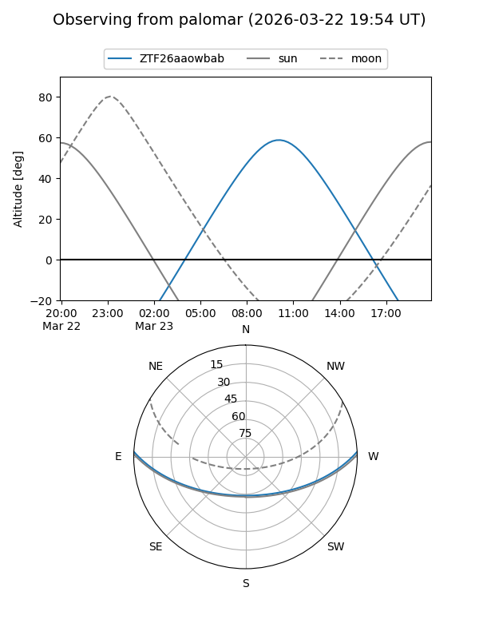

ZTF26aaowbab
Target ZTF26aaowbab at 2026-03-23 11:44
Aliases and brokers:
FINK: link
Lasair: link
ALeRCE: link
alt names
ZTF26aaowbab (ztf,fink_ztf)
Coordinates:
equatorial (ra, dec) = 214.7036,+2.32466
equatorial (HMS+DMS) = 14:18:48.86,+02:19:28.79
galactic (l, b) = (346.7976,+57.55452)
Flags:
Photometry:
last ztfr=16.61
1 ztfr detections
Lightcurve

Visibility


Additional plots